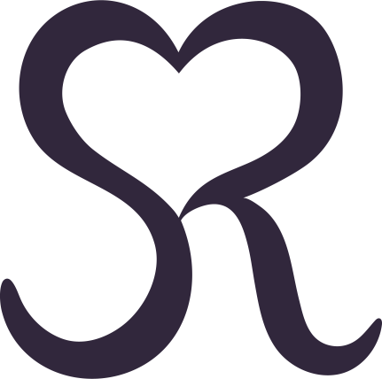

Life-Cycle Celebrant®
COVID-19
– At this time the measures in place for the pandemic, have
subsequently made service desks unavailable - you cannot get a
marriage license in Ontario. Until further notice, any weddings
planned for spring, summer and fall of 2020 should be considered
postponed and replanned for a new date. I am terribly sorry to
deliver this news, however I am still booking for winter and all of 2021.
In the meantime, I am available for virtual services such as vow renewal,
baby blessings, life celebrations and more.
Life-Cycle Celebrant®
As a Life-Cycle Celebrant® I have been trained and educated on creating personalized wedding ceremonies. I spend some time with you as a couple and you provide me some information that I draw from. I will create a narrative about your love, fully decked in unifying rituals that you choose and approve. I am here to make the ceremony custom and personalized to you and the love you and your partner share. Love is unique. Your love deserves to be shared uniquely.
The entire ceremony I write is edited by you. I can write and execute the whole ceremony. If you would like to write your own vows, I am able to edit them for you. I am able to write vows if needed.
As a Life-Cycle Celebrant® I have been trained in the art of creating personalized, custom ceremonies.
With the information you provide me, I create a narrative about your love, fully decked in unifiying rituals that you choose and approve. Together, we build a place in time for your romance story to be honoured, shared and unified. This is your love. Your day. Your way! What you want is what we make happen!

Handfasting

Unity Candle

Sandblending

Garland Exchange

Readings
Cross cultural is widely sought and I am happy to bring cultural elements from your background, so long as they are not of a religious nature that would be reserved for religious clergy.
Because it's your story, we can make it as long or as short as you want. The vows you speak can be classic or custom, written by you or me. We can involve as many or as few elements as you wish.
Just like a marriage ceremony, I create personalized ceremonies honouring a milestone in your relationship. I will help you recreate the wedding you had (or didn't). Rehonour your love and promises to each other with the magic of your time together.
I offer a no-fuss, no-ceremony eloping service. We can meet at your home, a coffee shop or even the airport for an authentic eloping! Quick and easy.
Eloping services are available from Sunday to Thursday.
Please note, elopings still require the obligatory paperwork from your municipality or province, as well as two witnesses.

Nothing is more
special than gathering our families to celebrate new life,
and to bring tokens of love and support to the parents and
newly born addition!
Whether it's a blessing or naming ceremony, I am here to
lead you and your family into honouring these precious
beings, and creating their first right of passage into their
lives' journey.

Celebrating the lives of loved ones is one of the most
important parts of grieving. It allows us to make peace
and relive all the great times we've had together.
Together we will create a space for loved ones. One-of-a-kind
celebrations that embody the essence of our loved ones
and keep their love, influence and spirit alive.
Due to the unique nature of customized work, I am unable to have a standard price list.
Upon the initial no obligation meeting, I will review what you're seeking and give you a proper price based on your specific needs and wants.
I aim to create your vision within your budget as best as possible, and am happy to offer suggestions to keep things affordable.